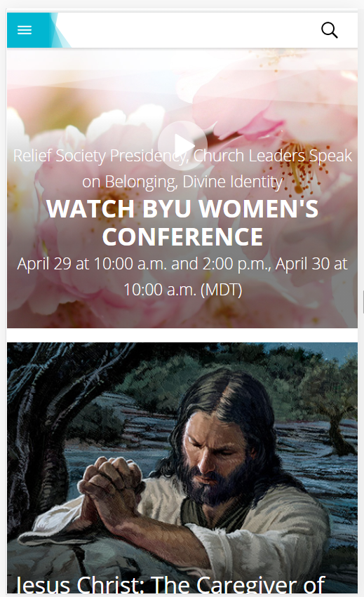
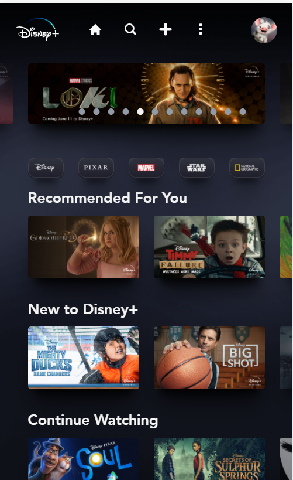

PARC: Alignment
The Church of Jesus Christ of Latter-Day Saints
The Church of Jesus Christ of Latter-Day Saints Homepage This site shows the principles of alignment in the way the blocks of images and text fit together nicely. They all line up to create nice visual lines. Nothing stand out as being out of place, or not fitting in.
PARC: Contrast
Brigham Young University - Idaho
Brigham Young University - Idaho Student PortalThe design principle of contrast is shown in this site's use of different text and background colors. This makes the content legible, even with a different color behind it. A light color of text with a dark background is a recommendable combination.
PARC: Proximity
Disney Plus
Disney Plus Homepage This site shows great proximity, a principle of design. The images with the movie titles are close to the diferent row columns, showing which ones are associated with each other.